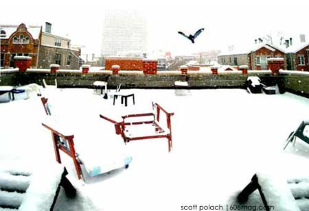

|
backcast: tying chicago to the world through similar past weather experience
Chicago, Illinois, USA. January 15, 2004. Snowy. 26 degrees Fahrenheit.

here's how it works: we pick a day here in chicago and make note of the weather. our reporters
scour the globe looking for cities with a similar forecast, and then pull an interesting random
fact from that place. It's not a forecast, it's a backcast of useless information. |
|
Red Boiling Springs, Tennessee
Temperature: 26 degrees
The world's largest sundial , not that anyone would be able to tell what time it is using something as primitive as the sun in this day and age, should be on everyone's list of things to see. But there's something calming about knowing it's out there, in the same vein as the world's largest ball of string.
Morne Trois Pitons National Park, Dominica
Temperature: 26 degrees
In the middle of nowhere, situated in a valley of rainforests you reach when guided by locals, you can reach the second-largest boiling lake in the world . You'll get there after an eight-mile hike and see that, yes, the water does boil “like a hell-broth boil and bubble … double, double toil and trouble,” as it was once written in MacBeth .
Mt. Etna, Italy
Temperature: 26 degrees
If there's anything to learn from in this world about the conversation of energy , check out Mt. Etna. The lava retained its heat from the 2001 eruption until May 2002. Just don't go Mt. Etna-hiking with bare feet. Even rubber soled-shoes have been known to melt.
Lesotho, South Africa
Temperature: 26 degrees
Since 1996, of the 329 species of birds in this country, ten are globally threatened, and only new species have been introduced. Surprising that more aren't going extinct in the severe continuing drought that is plaguing the area . Approximately 600,000 – 700,000 will require food aid, a staggering number considering the area's population is approximately 2 million.
Barrow, Alaska
Temperature: 26 degrees
This city takes first place as the nation's coldest, as well as the best place to measure air pollutants! Due to the snowy white landscape, the yellowish and brownish pollutants show up great ! If they can reach all the way up there, then imagine what your lungs look like …
|